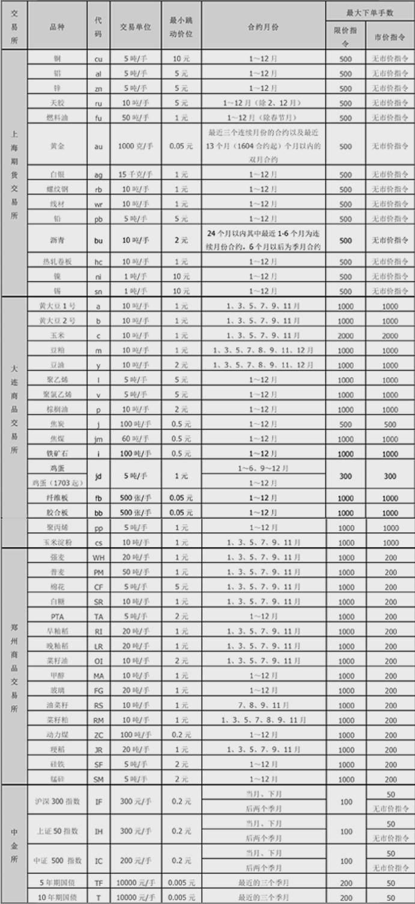
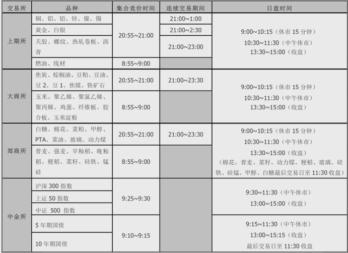
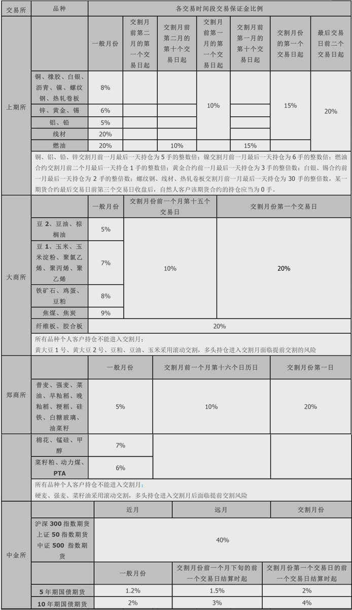
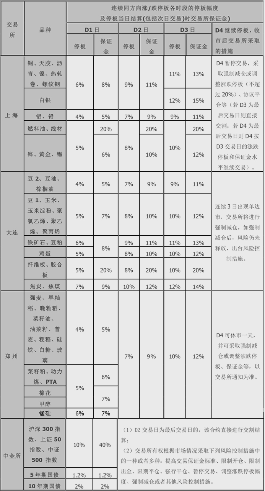

-
银期转账
- 1. 目前可以通过何种方式出入金？
- 答：目前海通期货客户可以通过银期转账和银行汇款两种方式出入金。已开通银期转账客户通过银期转账方式出入金，未开通银期转账客户通过银行汇款方式出入金。
- 2. 目前哪些银行可以办理银期转账以及办理银期需注意的问题？
-
答：目前海通期货已经开通了建行、工行、交行、中行、农行、浦发、中信、民生、光大、招商、兴业、平安银行的全国银期转账业务，投资者只要在海通期货完成开户手续后，携带本人身份证、已登记的期货结算账户银行卡和《银期转账协议书》到银行办理银期转账手续。
1)持有建行、农行借记卡的客户可以跨省在异地办理银期业务。
2)法人客户办理银期业务时，需到相应期货结算账户的开户行办理手续。
3)持有工行与建行存折的客户也可以办理银期业务。 - 3. 个人客户办理银期转账需要哪些资料？
-
答：个人客户开户办理银期转帐需提供以下材料
1) 客户本人身份证原件
2) 银行借记卡原件
3) 银期转账协议书
- 4. 银行卡已与其它公司期货账户建立银期关系，是否还可以在我公司办理银期转账？
- 答：可以。
- 5. 银期转账业务是否可以通过网上银行开通？
- 答：目前可以通过网银开通银期转账业务的银行是：工商银行、交通银行、建设银行、农业银行、中国银行、光大银行、浦发银行、兴业银行、民生银行、招商银行、平安银行。
- 6. 在什么时间内可以在银行办理银期转账？
- 答：客户去银行办理银期转账手续的时间必须在正常交易日的9：00--15：30。
- 7. 银期转账划转资金时要注意哪些问题？
-
答：常见的问题有4种：
1) 在每个银行，客户只能指定一个银行卡卡号作为银期转账的账号，但客户可以办理多家不同银行的银期转账。
2) 客户在通过银期转账入金时，银行卡中必须最低保留10元余额。
3) 在办理银期转账时银行会要求客户输入期货资金密码，自然人客户初始密码为身份证后六位，单位客户初始密码为营业执照后六位
4) 客户每笔出入金金额最少不得低于100元，每日最高出金金额不得超过100万元。
5) 每日出金次数不得超过5次。 - 8. 当日清仓后，能否将保证金全部转出？
- 答：不能全部转出。因为当日清算未进行前，可取资金为客户资金账户可用资金的70%。第二天，才能将资金全部转出。
- 9. 在无交易无持仓的情况下，怎样才能通过银期转账将保证金全部转出？
- 答：100万元以下的资金可以在直接通过银期转账系统划拨资金。若划出资金大于100万元的，请在划转前电致公司财务部（021-68685618），经审核后工作人员将释放资金权限，即可将保证金账户内资金全部转出。
- 10. 为什么客户大于100万出金需联系期货公司财务部？
- 答：由于期货交易实行当日结算，公司的资金需在四个交易所及多家银行之间合理配置，因此对大额出金，财务部将合理安排客户需求。
-
交易指南
- 1. 目前交易所及其交易品种有哪些？
-
交易所合约品种列表
 - 2. 什么叫集合竞价？
-
答：集合竞价在某品种某月份合约每一交易日开市前5分钟内进行。其中前4分钟为期货合约买、卖价格指令申报时间，后1分钟为集合竞价撮合时间，开市时产生开盘价；
集合竞价采用最大成交量原则，即以此价格成交能够得到最大成交量。高于集合竞价产生的价格的买入申报全部成交；低于集合竞价产生的价格的卖出申报全部成交；等于集合竞价产生的价格的买入或卖出申报，根据买入申报和卖出申报量的多少，按少的一方的申报量成交； - 3. 国内各期货合约的集合竞价时间和交易时间？
- 
- 4. 成交撮合原则是怎样的？
-
答：价格优先、时间优先；
停板价位平仓优先、时间优先。 - 5. 下单时可不可以指定平今仓？
- 答：目前只有上海交易所的交易品种平仓时可以下达"平今仓"指令。大连、郑州交易所和中国金融期货交易所的交易品种平仓时没有"平今仓"指令，交易所在闭市后一律按规定进行结算。
- 6. 无法正常委托怎么办？
-
答：
步骤一：确定是否在交易时间；
步骤二：核对委托信息输入（合约代码，价格包括最小变动价位，手数，买卖和开平方向）是否正确；
步骤三：若发出平仓委托时提示“超过可平仓手数”，检查是否有相应持仓，之前有无未成交委托。
步骤四：若发出开仓委托提示“资金不足”，首先核实是否有足够保证金，然后检查是否有未成交挂单。 - 7. 什么是保证金制度？
-
答：在期货交易中，交易者只须按所买卖期货合约价值的一定比例缴纳少量资金，作为履行期货合约的财力担保，便可进行全额交易。这种制度称为保证金制度；
例：IF1505报价为4225.6点，假设保证金比例为12%，则交易3手所需的资金为：4225.6×300×12%×3=456,364.8元。
保证金制度是指在期货交易中，任何交易者必须按照其所买卖期货合约价值的一定比例缴纳资金，用于结算和保证履约。 - 8. 交易所对各品种期货合约在不同阶段收取的保证金比例？
-
各交易时段交易所保证金比例表

注：交易所会根据市场风险调整各品种保证金比例，具体内 容以交易所公布结果为准。
- 9. 什么叫结算价？
- 答：商品期货当日结算价是指某一期货合约当日成交价格按照交易量的加权平均价。当日无成交价格的，以上一交易日的结算价作为当日结算价。金融期货结算价是当日最后一个小时的成交价格按照交易量的加权平均价。
- 10. 什么叫当日无负债结算制度？
- 答：当日无负债结算制度，其原则是结算部门在每日交易结束后，按当日结算价对会员和投资者结算所有合约的盈亏、交易保证金及手续费、税金等费用，对应收/应付的款项实行净额一次划转，相应增加或减少保证金。交易结束后，一旦会员或投资者的保证金余额低于规定的标准时，将会收到追加保证金的通知，两者的差额即为追加保证金金额。
- 11. 什么是涨跌停板制度？
-
答：期货合约前一交易日结算价加上允许的最大涨幅构成当日价格上涨的上限，称为涨停板价；期货合约前一交易日结算价减去允许的最大跌幅构成价格下跌的下限，称为跌停板价；每日涨跌停板价幅度为每日价格最大波动幅度，期货合约在一个交易日中的成交价格不能高于或低于以该合约当日的涨跌停板价幅度，超过该范围的报价将视为无效，不能成交；
当某一期货合约在某一交易日收盘前5分钟内出现只有停板价位的买入(卖出)申报、没有停板价位的卖出(买入)申报，或者一有卖出(买入)申报就成交、但未打开停板价位的情况时，即只有单边报价或是不足以打开单边报价的情况，称为涨（跌）停板单方无报价（简称单边市）。 - 12. 期货合约各品种涨跌停板制度？
-
各合约涨跌停板及交易所保证金比例

注：交易所会根据市场风险调整各品种保证金及涨跌停板比例，具体内容以交易所公布结果为准。
- 13. 什么是持仓限额制度？
-
答：持仓限额制度是指期货交易所为防范操纵市场价格的行为，防止期货市场风险过度集中于少数投资者，对会员及客户的持仓数量进行限制的制度。
注：同一客户在不同会员处开仓交易，其持仓合计不得超出该客户的持仓限额。
- 14. 交易所有哪些限仓制度？
-
答：限仓是指交易所规定会员或客户可以持有的，按单边计算的某一合约投机头寸的最大数额。限仓实行以下基本制度：
1) 根据不同期货品种的具体情况，分别确定每一品种每一月份合约的限仓数额；
2) 某一月份合约在其交易过程中的不同阶段，分别适用不同的限仓数额，进入交割月份的合约限仓数额从严控制；
3) 采用限制会员持仓和限制客户持仓相结合的办法，控制市场持仓规模；
4) 套期保值交易持仓实行审批制，其持仓不受限制。
经纪会员名下全部客户所有持仓的合计数（多头部位、空头部位分别计算，下同），不得超出该会员的限仓数额。同一客户在不同经纪会员处开有多个交易编码，各交易编码上所有持仓的合计数，不得超出一个客户的限仓数额。
进入交割月限仓制度：
大连郑州期货合约自然人客户持仓不得进入交割月，上海期货交易所合约最后交易日前第三个交易日收盘后，自然人客户持仓应当为0手。 - 15. 什么是大户报告制度？
- 答：大户报告制度是指当会员或客户某品种持仓合约的投机头寸达到交易所对其规定的投机头寸持仓限量80%以上（含本数）或交易所规定要求的，会员或客户（通过会员）应向交易所报告其资金情况、头寸情况等。
- 16. 什么是强制减仓、强行平仓制度？
-
答：强制减仓是当市场出现连续N个交易日（中金所合约连续两个交易日，上期所、郑商所、大商所合约连续三个交易日）的同方向涨停（或跌停）等特别重大的风险时，交易所为迅速、有效化解市场风险，防止会员大量违约而采取的措施。交易所将当日以涨跌停板价申报的未成交平仓报单，以当日涨跌停板价与该合约净持仓盈利投资者按持仓比例自动撮合成交。同一投资者双向持仓的，其净持仓部分的平仓报单参与强制减仓计算，其余平仓报单与其反向持仓自动对冲平仓。
强行平仓制度是指当会员或客户的交易保证金不足并未在规定时间内补足，或者当会员或客户的持仓数量超出规定的限额时，交易所或期货公司为了防止风险进一步扩大，强制平掉会员或客户相应的持仓。 - 17. 公司在什么情况下会执行强行平仓？
-
答：当客户交易结算单上的可用资金一出现负数时，公司将发出追加保证金通知，在客户未及时处理的情况下，公司有权实行强行平仓。
如客户持仓超出交易所规定的限额时，客户在规定时间内未及时处理的情况下，公司有权实行强行平仓。 - 18. 什么是实物交割制度和现金交割制度？
-
答：实物交割是指期货合约到期时，交易双方通过该期货合约所载商品所有权的转移，了结到期未平仓合约的过程。
沪深300、上证50及中证500指数期货合约采用现金交割方式。在现金交割方式下，每一未平仓合约将于到期日得到自动冲销，也就是说，在合约的到期日，卖方无需交付股票组合，买方也无需交付合约总价值，只是根据交割结算价计算双方的盈亏金额，通过增加盈利方和减少亏损方保证金账户资金的方式来了结交易。 - 19. 如何获取交易结算账单？
- 答：在本公司有以下几种方式可以获得交易结算单：期货保证金监控中心（http://www.cfmmc.com/）、网上交易系统中结算单查询。
- 20. 如何解读交易结算账单？
-
答：目前交易所和期货公司均采用逐日盯市的结算方式：
1)平仓盈亏（逐日盯市）＝平当日仓盈亏+平历史仓盈亏
①平当日仓盈亏＝当日开仓价与平仓价之差×手数×交易单位
②平历史仓盈亏＝平仓价与昨日结算价之差×手数×交易单位
2)持仓盈亏（逐日盯市）＝持当日仓盈亏+持历史仓盈亏
①持当日仓盈亏＝当日结算价与当日开仓价之差×手数×交易单位
②持历史仓盈亏＝当日结算价与昨日结算价之差×手数×交易单位
3)当日盈亏＝平仓盈亏（逐日盯市）+持仓盈亏（逐日盯市）
4)当日结存（逐日盯市）＝上日结存（逐日盯市）+当日存取合计+当日盈亏-当日手续费
5)客户权益＝当日结存（逐日盯市）
6)可用资金=当日结存-保证金占用
7)风险度=保证金占用/客户权益*100%
-
软件使用常见问题
- 海通期货提供的行情软件，是否可以导出相关指标数据？
- 答：目前公司提供的行情软件中仅Yes Trader交易终端程序可以导出相关指标数据，其他行情软件不提供此功能。
- 客户使用掌上财富交易，为何提示“****合约不能交易”？
- 答：出现该提示，可能是由于客户下单时选择了【***连续】、【***连三】、【***连四】这类合约进行交易，这些合约是博易大师为方便客户查看连续月份合约的指标而设置的，并非交易所提供的合约，提醒客户不要选择这类合约进行交易。
- 客户收到掌上财富开通短信，为何按短信网址打不开下载页面？
- 答：由于掌上财富下载网址是手机上网格式的wap页面，部分手机可能不支持此类链接，可建议客户在手机上搜索掌上财富进行下载，下载时根据客户手机型号下载，如页面中没有客户手机型号，可按照客户手机系统下载通用版掌上财富。
- 客户使用交易软件转账时，为何提示“该报盘未连接到交易所”？
- 答：该提示主要出现在客户所使用的交易软件为第三方的交易系统，例如文华财经一键通、博易大师闪电手等，提醒客户在使用第三方交易系统转账时，需要将银期转账列表中的银行账号选中后再进行转账操作，如还出现该提示，是由于第三方交易系统的引起转账接口不稳定造成，建议客户使用快期进行银期转账。
- 客户登陆交易系统，为何提示“登陆服务器连接超时”？
-
答：该情况主要是由于登陆时网络不畅导致，客户可检查一下情况来确认原因：
1）端口屏蔽：客户所在的交易环境可能是公共场所的局域网络（包括公司、网吧等），由于我公司交易服务器端口为高频端口，局域网服务器可能对高频端口设置了防火墙屏蔽，只需局域网服务器开通该端口即可，端口号可在快期登陆界面的【选择服务器】中【代理及服务器配置】查看；或客户自行查找代理登陆我公司交易系统。
2）路由器故障：客户为个人网络，但配置了多台电脑，并有路由器进行分流，可能存在路由器分流网速不畅，客户将路由器进行重启后重新登录我公司交易系统。
3）网络原因：客户为3G网络或者电信无线宽带，由于此类网络存在网速不稳定的状况，因此建议客户使用有线网络重新登录我公司交易系统；确认客户宽带属于电信还是网通，建议客户选择相应的服务器登录交易系统。 - 使用交易系统下单委托时，为何提示“用户在本系统没有报单权限”？
- 答：由于公司为提供客户先进以及安全的交易通道，构建了多中心多活交易集群系统，目前有两个交易中心，分别为上海交易中心和大连交易中心，客户在我公司开户后默认只能在上海交易中心进行交易委托，若客户选择大连的服务器进行交易就会出现“用户在本系统没有报单权限”的提示，客户只需退出软件后重新选择上海的服务器登陆即可。
注：如客户需要开通大连交易中心，需要向客户所属营业部申请，并提交《客户迁移申请单》，审核通过后客户即可登陆大连服务器进行交易，如客户需要从大连服务器转回上海服务器，则以相同手续重新办理。